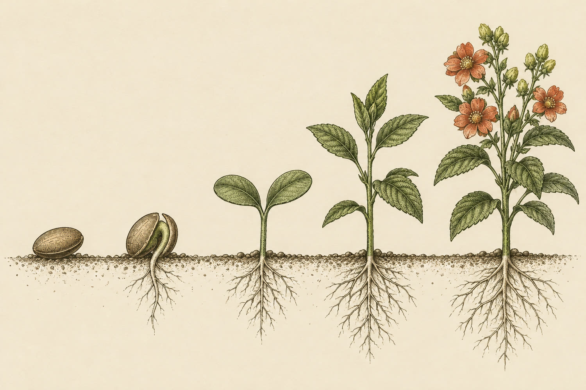

Florescer a voz
Manual da marca · Teacher Ana
A anatomia da sua voz
ITeacher Ana- 1Lábios as cores
- 2Língua as fontes
- 3Palato os layouts
- 4Nariz o feed
- 5Ramo os elementos
- 6Laringe a sua resposta
Você ensina inglês pelos músculos da fala. A marca nasce desse mesmo corpo: cada parte do mapa acima é uma parte do seu manual. Toque num número para ir até ela.
- AVocêBióloga que reprovou em inglês na escola e destravou aos 22. Ensina com autenticidade, aceitação e empatia: parceira de jornada, nunca juíza de caneta vermelha.
- BSua alunaEntende tudo, mas trava na hora de falar. "Dá branco", "congelo na pergunta". Quer reunião, entrevista e congresso em inglês, com tranquilidade.
- CA marcaLeve, moderna e acolhedora. Mistura português e inglês. Nunca arrogante, coach ou crítica com quem erra.

12345- 1Sementea sua história: a aluna que achava impossível e virou teacher.
- 2Raizo método centrado na pessoa, que dá segurança para errar.
- 3Brotonovembro: 1 carrossel e 1 reel por semana sobre os músculos da fala.
- 4Folhasa comunidade, com desafios e workshops.
- 5Florturmas, aulas individuais e inglês para empresas.
O conceito "Florescer a voz"
As cores
IIlábiosSão as cores que você mandou, só organizadas: quanto cada uma aparece no feed e que papel ela faz. O verde-limão entra pequeno, como um marca-texto. Toque numa cor para copiar o código.
Monte um acorde
Fundo
Destaque
Só aparecem acordes que ficam legíveis. O último que você montar vai junto com a sua resposta.
As cores
As fontes
IIIlínguaA fonte é o jeito de falar da marca. O mesmo post foi impresso em quatro tiragens, cada uma com uma dupla diferente. Escreva uma frase sua e toque na tiragem que soa como você: todos os posts do manual mudam junto.
Arraste para o lado para ver as quatro tiragens.
As fontes
Os 5 layouts
IVpalatoO palato dá forma à fala; os layouts dão forma ao feed. Todos têm a mesma margem, a mesma barra no topo com o tema e o mesmo rodapé com o seu @. São estes cinco que vão para o seu Canva.
Os layouts
O seu feed
VnarizOs cinco layouts juntos no seu perfil, com as cores se revezando. Logo abaixo, um carrossel de exemplo para deslizar, no tema com que você quer começar.
O jeito do feed
O que brota
VIramoNada de bandeira nem ícone de escola. Os desenhos vêm da sua história: a voz que vira ramo, o cérebro florescendo, papel de verdade. Nas fotos, a sua rotina em luz de janela, e não só o seu rosto: mãos, caderno, espelho, paisagem.


- Bandeiras e o azul e vermelho de EUA e Inglaterra.
- Cara corporativa de escola tradicional.
- Monograma e balão de fala sozinho (é a cara do Take it Easy).
- Tom de coach e promessa de fluência rápida.
Fica de fora
Elementos e fotos
A sua resposta
VIIlaringeConfira suas reações, escreva o que quiser e toque em Enviar. A resposta chega direto pra gente, com tudo o que você escolheu no manual. Pode enviar mais de uma vez: cada envio fica registrado.
Imagens ilustrativas de direção. As fotos finais serão as suas. Feito pela Rama.